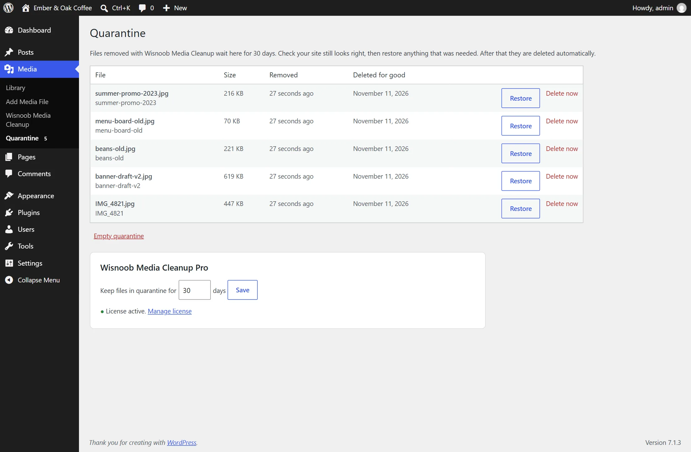
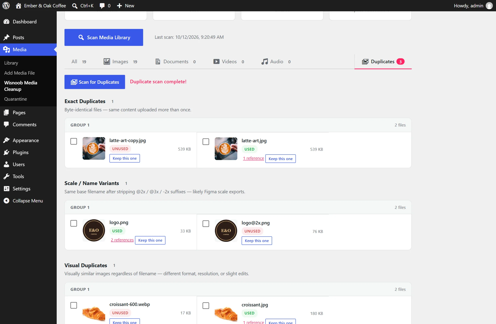

Nothing goes by accident
Deleting stays off until a scan has fully finished. Right before deleting, it re-checks content edited since the scan, and every delete asks first.
Find unused and duplicate media, see exactly where every file is used, and clean up your WordPress library with confidence.
One click scans posts, pages, products, custom fields, page builders, widgets, menus and theme settings. Big libraries are scanned in small steps, so nothing times out.
Every file lists the pages, products and settings that use it. No bare "unused" label you have to take on trust.
Find on page opens the page, scrolls to the image and highlights it, so you can check with your own eyes before deleting anything.
Exact copies, @2x scale exports and the same picture in another size or format. Each copy shows whether it's used, so you keep the one your pages rely on.
Deleting stays off until a scan has fully finished. Right before deleting, it re-checks content edited since the scan, and every delete asks first.
Block attributes, gallery shortcodes, ACF fields, Elementor data, WooCommerce galleries and category thumbnails, templates, global styles and Additional CSS.
The highlighter runs on your live site, only for logged-in admins who opened it from the plugin, and steps through every match on the page.

QuarantineRemoved files move to a protected quarantine and disappear from the Media Library. Check your site, then restore anything you needed with one click. They're deleted for good after 30 days, or however many you choose.

Merge duplicatesClick Keep this one. Posts, pages, featured images, product galleries, custom fields and Elementor layouts that used the other copies switch to the one you kept.
$0
Waiting for WordPress.org review. It'll be a free download there once it's through.
$29/ year
Yearly: updates and support for a year, renewing at 20% off. Lifetime: pay once, updates for life. 14-day money-back guarantee.
It only deletes files you select, after you confirm, and only after a complete scan. Files found in use are skipped unless you say otherwise. It can't see every possible reference, so always keep a backup.
Files referenced only from theme or plugin PHP code, hard-coded in theme CSS files, or linked from other websites. Check the Find on page result before deleting anything you're unsure about, or get Pro so you can restore it.
No. Scanning only happens when you click Scan in the admin. Nothing runs on the front end except the Find on page highlighter, and only for logged-in administrators who opened a page from the plugin.
Yes. Pro is an add-on: install and activate the free plugin, then upload Pro and enter the license key from your purchase email under Media → Quarantine.
Deleting goes back to permanent and the merge button is hidden. Files already in quarantine stay there and can still be restored.
Yes. Deactivate it on the old site under Media → Account, then activate it on the new one.
I build custom WordPress work too. Email me with what your site needs.